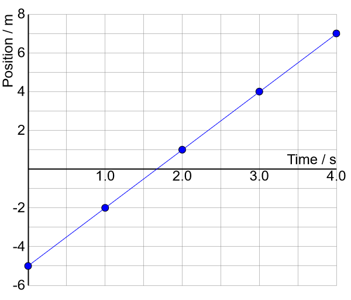

Velocity
We learned in the last lesson that displacement measures the change in an object’s position.
Velocity measures how quickly the position changes, or the rate of displacement:
$$\vec{\mathbf v} = {\Delta\vec{\mathbf d}\over \Delta t}$$
- Velocity, like displacement, is a vector.
- The SI unit of velocity is metres per second.
- The conversion factor to or from km/h is$$\mathrm{1\ m/s = 3.6\ km/h}$$
Motion Graph

$$\vec{\mathbf v} = {\Delta\vec{\mathbf d}\over \Delta t}$$
$$\vec{\mathbf v} = \mathrm{(+7.0\ m) - (-5.0\ m)\over 4.0\ s - 0.0\ s}$$
$$\begin{align}&= \mathrm{{+12.0\ m \over 4.0\ s}}\\ &= \mathrm{+3.0\ m/s}\end{align}$$
- Since \(\Delta\vec{\mathbf d}\) is the “rise” of the graph and \(\Delta t\) is the “run”, velocity is the slope of the line.
When the graph is a straight line, the motion is classified as uniform motion.
- The graph has a constant slope.
- The velocity is constant.
- The position changes by the same amount in equal amounts of time.
When the graph is curved, the motion is classified as accelerated motion.
- The slope of the graph is not constant.
- The velocity is changing.
- The position changes by the different amounts in equal amounts of time.
Speed
Speed is the rate of distance travelled:$$v = {\Delta d\over \Delta t}$$
- Remember that distance is measured along the path of the motion, while displacement is measured in a straight line.
- Speed is a scalar (no direction) while velocity is a vector.
Example 1
What will be the displacement of a cyclist who rides with a velocity of 27.0 km/h [south] for one minute?
Identify the variables and convert to standard SI units if necessary:
- \(\vec{\mathbf v} = \mathrm{27.0\ km/h\ [S] = 7.50\ m/s\ [S]}\)
- \(\Delta t =\ \mathrm{1.00\ min = 60.0\ s}\)
- \(\Delta\vec{\mathbf d} =\ ?\)
Select the relevant relationship (equation):
$$\vec{\mathbf v} = {\Delta \vec{\mathbf d}\over \Delta t}$$
Rearrange the equation to isolate the unknown:
$$\vec{\mathbf v}\color{red}{\Delta t} = {\Delta \vec{\mathbf d}\over \Delta t} \color{red}{\Delta t}$$
$$\vec{\mathbf v}\Delta t = \Delta \vec{\mathbf d}$$
Evaluate, including units:
$$\Delta \vec{\mathbf d} = \mathrm{{7.50\ m/s\ [S] \cdot 60.0\ s} = 450\ m\ [S]}$$
- Is the answer reasonable?
Example 2
An athlete can maintain an average speed of 7.80 m/s during an 800-metre race. How long will it take the runner to finish the race?
Identify the variables:
- \(v = \mathrm{7.80\ m/s}\)
- \(\Delta d = \mathrm{800\ m}\)
- \(\Delta t =\ ?\)
Select the relevant relationship (equation):
$$v = {\Delta d\over \Delta t}$$
Rearrange the equation to isolate the unknown:
$$v\color{red}{\Delta t} = {\Delta d\over \Delta t} \color{red}{\Delta t}$$
$$v\Delta t = \Delta d$$
$${v\Delta t \over \color{red}{v}} = {\Delta d \over \color{red}{v}}$$
$$\Delta t = {\Delta d \over v}$$
Evaluate, including units:
$$\Delta t = \mathrm{{800\ m \over 7.80\ m/s} = 103\ s}$$
- Always use standard SI units (except when the units cancel).
- Is the answer reasonable?